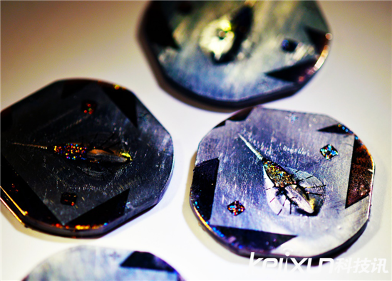
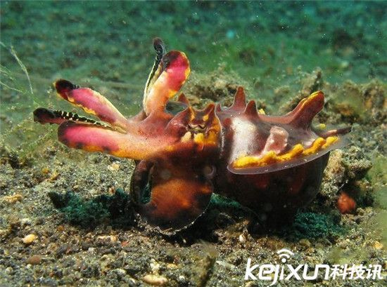
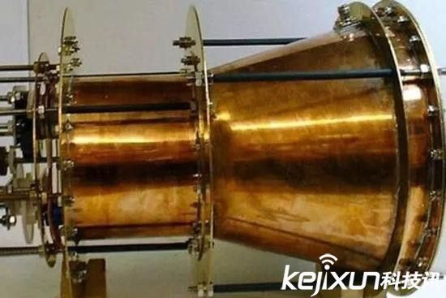
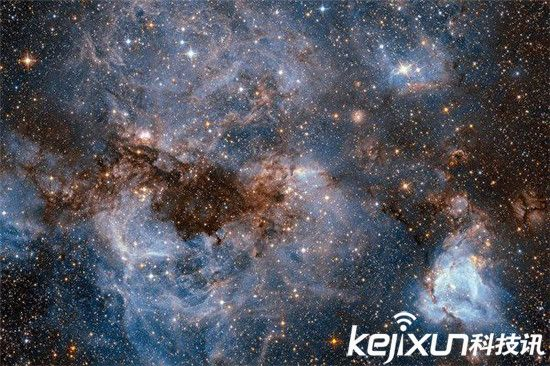
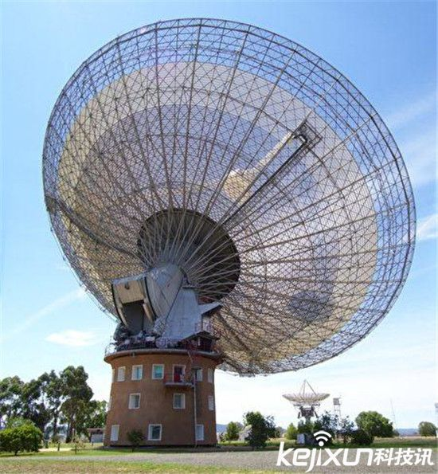
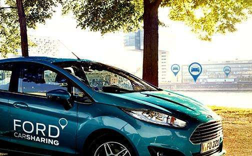
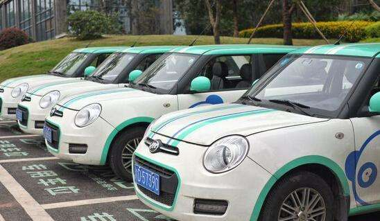
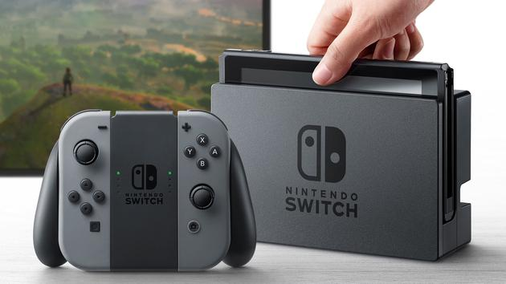

头条
什么是生物机器人？它能干什么?

采用钛合金模具制造组织工程化的生物机器人

【爱尚讯】12月28号消息，小编不得不说我们的世界真的是很奇妙，世界上有成千上万种我们叫不上名甚至都不知道的动物，今天小编就盘点了世界上十种既可爱，又能让你致命的动物，是什么动物这么神奇呢？赶快跟着小编一起来看看吧！

EmDrive引擎最初由英国研究人员罗杰·肖耶尔（Roger Shawyer）于2000年左右提出。EmDrive引擎的原理是，让光子微波在密闭的锥体内部反弹，从而在锥体较细的一端产生推力，推动宇宙飞船向前飞行。但从牛顿的运动学第三定律来看，这是不可能实现的，因为任何运动都会产生大小相等的反作用力，而EmDrive引擎不会向外喷射任何废料。（可以联想一下火箭，它们就是通过高速喷出气体和其它物质获得前进的推力的。）
浩瀚宇宙中，地球是唯一有生命的星球？美国探索外星人组织METI宣布，计划从2018年开始向太空发送信号，寻找地球之外的惊喜。据英国《每日邮报》12月26日报导，位于旧金山的非营利性研究组织METI（收发地外文明信息组织）宣布计划从2018年开始，向太空发送信号主动寻找外星人，而不是被动等待他们与地球接触。METI总裁道格拉斯‧瓦高什（Douglas Vakoch）说：“如果我们想在几代人的时间内开始交流，我们需要学习和分享信息。现在只有一个问题，就是找出最好的方式来迎接任何可能会收到这个消息的外星人。”

科学家希望使用无线电望远镜接受外星人飞来的信号。图为澳洲的帕克斯无线电望远镜。瓦高什今年早些时候在接受福布斯采访时谈到，需要向宇宙发送更复杂的信号。

12016年，互联网行业、科技行业发生了许多大事。2015年兴起的互联网金融陷入信任危机，微博、陌陌等社交平台借直播东风风生水起，智能手机行业线上品牌瓶颈，线下品牌回归，各家公司、各个行业的兴衰起落如同一幕幕悲喜剧，你方唱罢我登场。对于看惯秋月春风的业内人来说，行业一兴一衰，各领风骚三五年算不得什么大事，2016年真正可能改变人类未来的大事是人类的人工智能时代元年开启，一次深刻改变人类社会的变革即将发生。
最近在大街上看到摩拜和OFO单车的数量越来越多，看来大家在抢占市场方面都很拼。坤鹏论注意到，除了共享单车这种解决3公里以内的出行，以类似这种共享单车模式在运营的共享汽车也开始在铺市场。其实大家都明白，啥共享汽车、共享单车的，就是分时租赁。

如果Car2Go和Car2Share发展起来，之前买Smart的私家车主该郁闷了，满大街跑的都是Smart，开着自己的Smart出门，一不小心就会被人误认为是租的车。

新浪科技讯 北京时间12月28日消息，除了一些泄露资料，我们对任天堂的下一代游戏机所知甚少。Switch游戏机安装Nvidia显卡，它是移动设备与游戏机的混合体，引进了平板元素，控制器可以拆卸。根据FCC（美国联邦通信委员会）提供的资料显示，Switch游戏机配备的电池不可拆卸。听起来无关紧要，有些人担心游戏机的续航时间，对于他们来说这可是大事一件。Wii U游戏机因为续航不佳遭到批评，当时任天堂推出了容易安装的大容量电池组，它可以将续航时间延长到8小时。但Switch不行，用户无法通过更换电池的方式延长续航时间。
